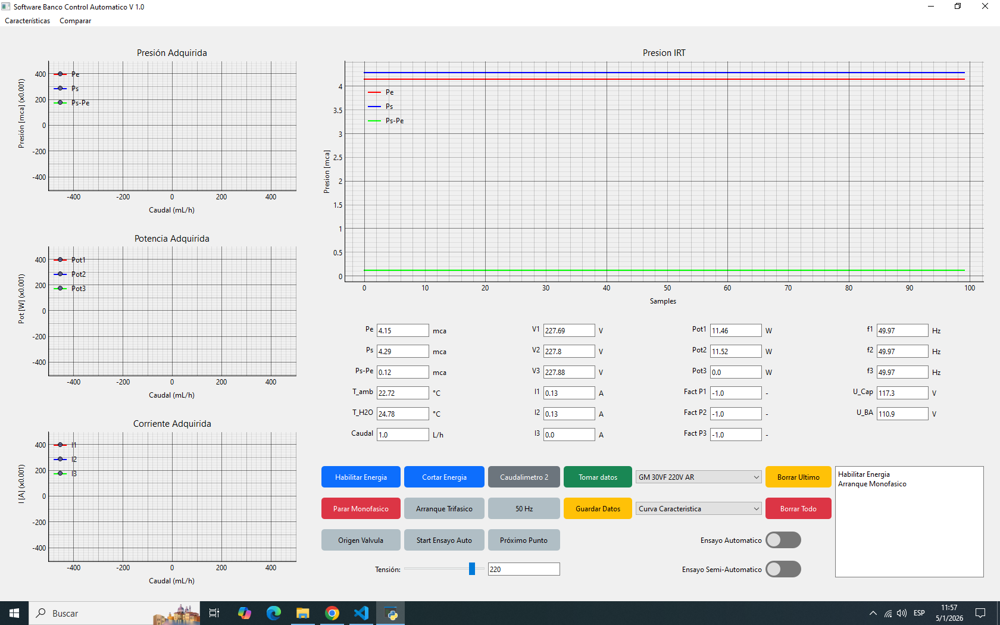
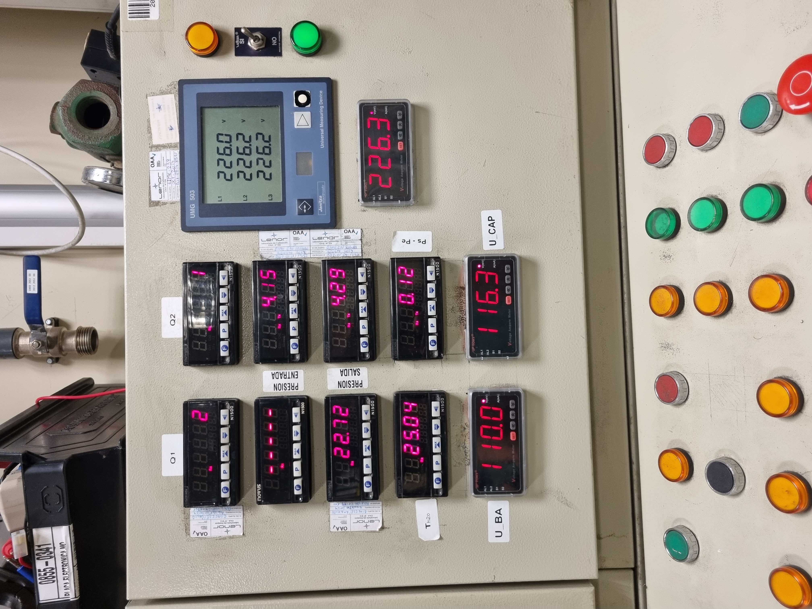
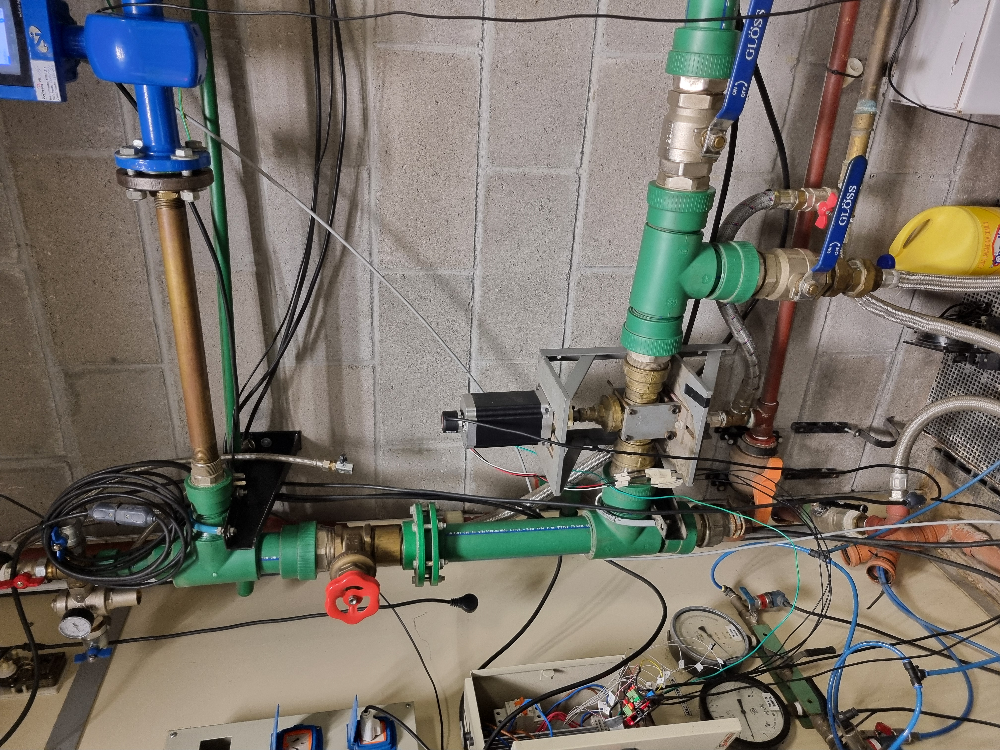

Project Excalibur - Icarus PoliTo
As Structural Team Lead, I coordinated the design, analysis, and manufacturing of the rocket structure over a two-year period. This role required close collaboration with propulsion, avionics, and operations teams.
My responsibilities included structural design, material selection, finite element analysis, and integration support throughout testing and launch preparation.


